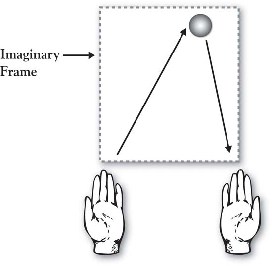
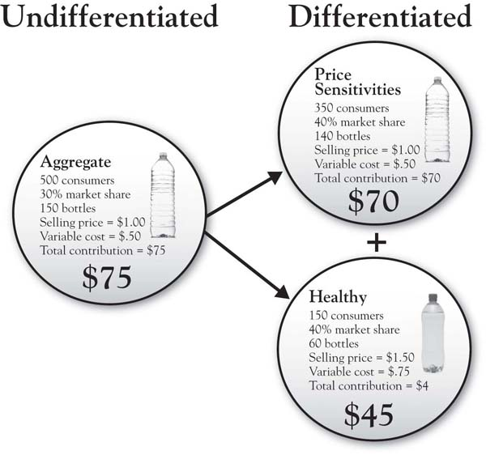
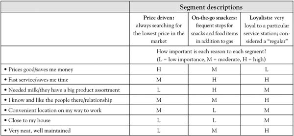
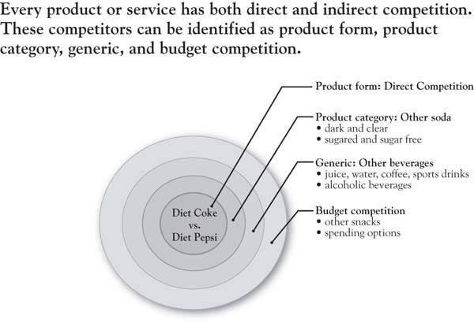

The world cannot be governed without juggling.
John Selden, The Table-Talk of John Selden, 1892
Jugglers captivate audiences. Even juggling just three balls is an elegant and artistic act that is seemingly out of the reach of 95% of the population, given requirements of technical skill, great coordination, and focus. This is why we watch the juggler with great envy and admiration.
Yet there is a way to simplify this complex and challenging act so that everyone can do it. (Honestly, everyone.) Michael Gelb’s brilliant discussion of juggling as a metaphor for human learning applies three key principles: (a) breaking the complex into simple pieces, (b) getting repetition on the pieces and then building them into an integrated whole, and (c) creating a language around which we can think, train, and discuss.Gelb (2003).
The natural inclination of the novice juggler is to focus on catching the balls. Toss one, then two, then three, and try to catch. Every dropped ball is a failure and a source of frustration. Balls fly all over the place because there is no discipline in the tossing. But it takes the novice a while to realize that because he is so focused on catching the balls, he fails to see the mechanics that underlie successful juggling. The error variance caused by the many, varied throws really takes the would-be juggler away from the goal of tossing and catching the balls in an easy, controlled pattern.
Gelb’s insightful method, though, brings order to this chaos by boiling the task down to its simplest components. Following it, a novice can be juggling three tennis balls comfortably in 10 to 20 minutes. We have provided an overview of the initial step in Figure 3.1 "Juggling Three Balls: The Initial Left-Hand Toss" to illustrate the basic principles applied.
Figure 3.1 Juggling Three Balls: The Initial Left-Hand Toss
You begin by writing numbers on the tennis balls with a magic marker—1, 2, and 3. Put a big dot or “X” on Ball 3 to distinguish it from the other two.
Left-Hand Throw (Ball 1)
Stand facing your couch so that when you are tossing balls the couch will catch any that do not land in your hands. Holding only Ball 1 in your left hand, envision a frame floating in front of you. The frame is about the width of your shoulders and would extend vertically to a little above your eye line. Toss Ball 1 from your left hand up to the center-right part of the top of your imaginary frame, keeping your eyes looking up (don’t look down at your hands). If you toss it accurately to the upper right of the frame, the ball will tend to drop straight down (see Figure 3.1 "Juggling Three Balls: The Initial Left-Hand Toss"). It is safe to say that your first few tosses will not be accurate. But it’s not important that you catch it. Just try to throw it easily, accurately, and in a controlled way. Focus on the toss with your left hand, not the catch with your right. Pick the ball up from the couch and keep tossing. Make your throws as consistent as you can. Odds are that by the 5th or 6th throw, even though you’re not trying to catch the ball in your right hand, you do (you just can’t help it!). Keep practicing your left-handed throw until the ball starts dropping consistently into your right hand, keeping your eyes forward.
This fundamental principle of the accurate “left-hand toss to upper right frame” is at the center of your ability to juggle. Once the novice has experience at this basic toss, Gelb teaches how to generalize it and follow with a “right-hand toss to upper left frame” (Ball 2) and then to add Ball 3 with appropriate timing. Once Ball 3 is added, the 3-ball integrated toss is defined around the concept of a juggulation, an aptly named cycle that consists of three tosses and three catches. The juggler proceeds to juggling excellence by first achieving a juggulation, then practicing one juggulation at a time, then going for two juggulations one after the other, and so on.
We leave you to Gelb’s books for completion of your juggling training. But there is a wonderful set of principles in this process that lay a foundation for our work on growth strategy:
The same principles are at work in our description of the 3-Circle model. What has been written on growth strategy, competitive strategy, positioning, customer analysis, competitive analysis, and company analysis can, and does, fill libraries. It is fair to describe it as chaotic, and attacking it all at once would be like trying to teach yourself to juggle by simultaneously throwing multiple balls in the air at once. Our process is designed to do exactly the same thing as Gelb’s: Break down the components, integrate them back together in a way that produces effective results, and, in doing so, create a language around which to build growth strategy. The goal is to make accessible concepts that have been thought to be messy, complex, and inaccessible.
The objective in this chapter is to teach how to frame up a 3-Circle project by defining its component parts. These are the three most significant component parts that every manager juggles in growth strategy planning and execution.
In developing growth strategy—as in juggling (!)—first, you need a frame that serves a purpose like the juggler’s box. The difference is that the frame for growth strategy is not imaginary. Instead, it is a very real combination of the statement of a particular company unit (product, service, brand, product/service line, etc.), the customer segment, and the competitor. In fact, the generic way that we define a growth strategy project is by stating a project goal in the following way:
“My goal is to grow COMPANY UNIT by creating more value for CUSTOMER SEGMENT than COMPETITOR does.”
This definition provides a means of building the frame for the growth strategy for a particular business unit. Some simple examples of project contexts, reflected from past projects, are the following:
This statement first requires a precise statement of each element. It puts the three dimensions of the 3-Circle project in a particular action-oriented context, focused on company growth, customer value, and a competitor. While the previous statements look fairly simple in hindsight, in reality, they are often difficult to develop. This is not because it is difficult to find things to put in the blanks. On the contrary, it is because there are often way too many things that we could put in the blanks!
Stephen Johnson is a photographer wishing to build a growth strategy for his newly opened shop. Stephen’s project definition states a goal of “seeking to grow Johnson Photography by creating more value for customers than Frederick Pictures (the local competitor).” There is a very clear problem with this statement. “Customers” is ill-defined. Once Stephen started exploring customers’ value definitions and perceptions, he would find very big differences between different types of customers. For example, primary school administrators who need to choose a photographer for school pictures will have very different criteria for value (e.g., moderate quality, volume, price) and very different awareness levels than will young couples or families in the market for weddings, who would likely put more emphasis on very high quality, responsive service, and related services (e.g., video, websites), along with a greater willingness to pay. In addition, depending on the segment chosen for study, different competitors emerge. If we tried to do a growth strategy project without distinguishing between potentially different customers, we would find a confusing mass of answers because different people will define value differently and will have different competitors in mind. As a result, it is best to be as specific as possible in defining project contexts, even if that means giving up some breadth in the analysis. As we will see, the returns provided by greater depth are more than worth the depth given up.
Often, defining the context for a 3-Circle project is an excellent opportunity to look more fundamentally at your business, asking the following basic questions:
The project context statement is an integrative statement that brings together these three elements. As noted later, the order of determination may well depend on the particular business problem that needs to be solved. The goal is to define the boundaries of the project in the form of a simple declarative statement that can be easily communicated to others. The best way to illustrate the subtlety—and, sometimes, frustration!—in leading to these simple statements is reflected in a series of principles. These principles provide the organizing framework for the chapter. The first principle is about chickens and eggs.
It would seem that there would be an optimal “starting point” for defining the project context statement. However, there is no single answer. If there is one natural, central defining construct in the process, it is customer decision making. This means that important issues spring from the way the customer approaches the decision—for example, what attributes, features, and benefits are important, what competitive options are considered and not considered, and so on. For the most part, the relevant dimensions of the context all spring from how the customers tend to view and make the decision. Early discussions with customers help define (a) the particular unit of analysis about which they make decisions—such as selection of one brand over another, or selection of complementary products and services at the same time, and (b) the competitive options that they consider.
That said, while an understanding of the customer segment and how customers likely choose between competitive options will somehow always be reflected in the analysis, it may not always be the first step. So what should come first in defining your initial project: the company unit, the customer segment, or the competitor? We believe that to answer this, you first need to consider your business problem. It may be that you have been observing a segment of customers get larger over time, representing a great opportunity, but you have been unable to build sales in that segment as quickly as you like. If so, the customer segment may be the anchor for the project. With the customer segment in mind, you then explore (a) what the relevant company unit (e.g., product or service line, brand, even division) is with which you can create value for this segment and (b) which competitor(s) you want to include in the analysis. On the other hand, maybe you have had a new competitor preying on your mind, perhaps one that is beginning to eat away at your sales. As such, a project may be motivated by a desire to develop a deeper understanding of a particular competitor. Once you anchor on a competitor, then think through the particular company unit with whom they compete and the most relevant customer segment you both serve. Finally, you may start with the company unit—once defined—for example, perhaps you have carried around the broader problem of how to grow the business unit. This one is broader by definition, in that it could conceivably involve different segments and competitors, so may require a bit more search and analysis in its development.
Without a particular business problem in mind, we will start with the company unit of analysis, noting that there is a common thread across all three areas to help define the basic dimensions of the project—that common thread is customer choice.
This is usually straightforward, so we will spend little time here. If the company is small and interacts with customers with a single product, it may be that the unit of analysis is just the company itself. Alternatively, the project may be organized around a particular product line. Consider the following project context statement from Medline, an Illinois-based manufacturer of hospital clothing and supplies: “How Medline can grow our fashion scrubs business by creating more value for hospital employees in a color by discipline program than a local scrub store?” In this case, the company unit is a newer line of scrubs that is targeted to hospitals who have adopted a color-by-discipline program in which the hospital employees role can be identified by the color they wear. This project was undertaken by the product manager responsible for the line who was exploring the potential for an online retail store presence.
The key criterion in defining context will almost always be a function of customer choice. There are many dimensions on which the company unit can be defined. It could be defined by an individual brand or an umbrella brand (covering multiple brands). It could be defined by an individual product or service or by a line of products or services. It is less likely to be a broad business unit, though, because what is critical is that the unit of analysis be some unit around which we can define customer choice; that is, the company unit must be the subject of choice. In short, we need to define the company as a unit of analysis where the dimensions of value on which customers compare our offering to competitors’ can be identified. As an example, we can define the reasons why customers might choose between Medline’s online store and a local bricks-and-mortar retail store; such factors would include time savings, ability to control shopping time frame, pricing, ability to try on goods, ability to physically inspect the products, immediacy of purchase, and so on. In contrast, it would be difficult to frame a project around Medline’s multidivision product line against that of a similar competitor. Why? Because people do not evaluate whether to choose one Medline division over another (or even over competitors). In contrast, evaluating a narrower product line or category provides a concrete starting point for a project. The general comparison of Dell versus Apple for the purposes of developing growth strategy is relevant only within particular product or service lines. Otherwise, it would be a general analysis of brand meaning, which, while useful for understanding brand equity, falls short of useful growth strategy development for particular areas of the firm.
Most companies (whether they know it or not) serve multiple customer segments. That is, different customers purchase the company’s products or services for different reasons. If we can recognize and understand those different reasons, it is possible to change our marketing mix, custom-tailoring it to different segments to generate a better share of each segment’s sales than if we had a “one size fits all” offering. A hypothetical example is presented in Figure 3.2 "Increased Profitability Potential for Differentiating Between Market Segments", illustrating how a bottled-water company might substantially increase its total contribution by recognizing that there are different segments of consumers. Treating all consumers the same (with a single product, i.e., the “undifferentiated” case), the company offers one product at a price of $1.00 and a margin of $0.50. However, through a little research, the company learns that different customers have different purchase motivations. It turns out that 70% of the market is price driven, and enjoys paying $1.00 for the current product. The other 30%, however, is concerned with health. The latter segment would like a product that is vitamin-fortified, and is willing to pay more for it. The calculations appear in the Appendix to this chapter, but the conclusion is that the firm’s total contribution increases from $75 previously (selling just the single product) to $115 when two products are offered. This is because the healthy segment will buy more of a product that better meets their needs, and their willingness to pay $1.50 provides a higher margin on each bottle sold (see the “differentiated” scenario on the right in Figure 3.2 "Increased Profitability Potential for Differentiating Between Market Segments"). In sum, there is an economic logic to market segmentation—firms engage in the practice because it increases profitability.
Figure 3.2 Increased Profitability Potential for Differentiating Between Market Segments
There are hundreds of textbooks and trade books that provide insight into “how” markets can be segmented. There are many different ways to segment the market, but there is a basic logic that is common across approaches:Sarvary and Elberse (2006).
An important way to think about market segments is to consider how different people might decide to buy a product or service for different reasons. Some people buy for price alone, for example. In contrast, others are willing to pay a high price for convenience.
The following exercise can be used to explore the reasons for customer choice in the market you are looking to study. Let us take the example of gasoline service stations. What segments might exist in this market? One way of addressing this would be to speak with those who have fairly extensive experience in the market (e.g., service station operators, executives). While their knowledge of the market may not be perfect—and they will have varying opinions—they will have insights that will help you move forward. In addition, you might have conversations with 5 to 10 customers—even just people you know—as almost all consumers have experience in this service category. But the goal of these discussions is to identify the general needs (e.g., the reasons why people need the service in the first place) and then the reasons why a customer chooses one service station over another. This exercise can be framed as a simple question: why did you choose service station A over service station B?You will also be able to ask some people why they have chosen B over A in the past, for many people likely have patronized both service stations. Let us say the reasons that emerge in this analysis include the following:
Now, looking at these reasons, two things become clear: (a) different people are likely to emphasize different reasons for choosing a service station (people segments), and (b) there are likely to be times when the same person might make a choice for different reasons (situation segments). People segments are easiest to think about, as we group different people into reason-based segments. So, for example, consider Figure 3.3 "Describing Customer Segments for Service Stations" in which—based on preliminary research and conversations with customers—we identify three segments that place different weights on the reasons we listed previously.These segments are based upon Mobil’s classic market segmentation research; see Sullivan (1995).
The segments are largely defined by different needs. The first segment tends to seek low gas prices first and foremost, and other concerns are secondary. The second segment seeks food product assortment and variety. The third segment is happy to pay higher prices because they value consistently patronizing a service station where expectations are regularly met and there is value in the relationship built with the staff. This is the basis for market segmentation: Different people choose certain products for different reasons.
Figure 3.3 Describing Customer Segments for Service Stations
The point of exploring customer segments in your market is that, most of the time, it is best to keep a project focused on one segment. The clearer a picture you have of the particular customers you are seeking to grow business with, the deeper and more insightful your project will be. For example, Harley-Davidson management could define a project as having the goal of “growing sales by creating more value for heavy weight motorcycle riders than does Honda.” The challenge with this customer definition is that it is very broad, encompassing many different types of customers who purchase motorcycles for very different reasons. Envisioning growth among customers requires a very close look at who they are and “why they buy.” Based on research summarized in Winer,Winer (2002). there are, in fact, at least six different customer segments of Harley purchasers, ranging from “tour gliders” (about 14% of Harley purchasers) to the much larger “dream rider” segment, which accounts for 40% of Harley’s market. The tour gliders use their bikes for long trips for recreation and relaxation, tend to buy more expensive bikes, and spend twice as much on accessories as the dream riders, who tend to ride many fewer miles—mostly local—and appear to be “outlaw wannabes.” If a growth strategy project mixed these two segments, it would be difficult to sort out value—the tour gliders seek bike comfort for long trips, while the dream riders seek shine and glitz in a less expensive bike that makes them a “hog.” The individual preferences of each segment would be blurred if we tried to do a project that lumped them together. In addition, these different segments may each have different competitive brands in mind when they choose their motorcycles. That leads us to the next principle.
There are a variety of strategic considerations in selecting a competitor or competitors for your growth strategy project. But two general rules capture the most important issues:
Identifying the competitors that your customer considers is actually pretty straightforward—it just takes a few conversations with customers, asking the question, “When you thought about buying a product or service in this category, what were all the options you considered?” But you will also need to keep in mind a broad field of vision for identifying your competitors. You may think of your competitor as the firm that is most like you or that is your biggest potential threat in terms of market share and profitability. Your customer may have other ideas. A systematic way to think about potential competitors is captured in Figure 3.4 "Levels of Competition", which depicts concentric circles representing competition at different levels. If our target brand for assessment is Diet Coke, for example, we can argue that its closest direct “form” competitor is Diet Pepsi—the two are of the same exact product form, and each is a national brand. Yet we know that Diet Coke competes at other levels with other brands and options. At the product category level, there are many other soda products that the consumer might consider, including national, regional, and local brands. At an even broader level, it is conceivable that, at times, a consumer may choose between having a Diet Coke and a cup of coffee (or another beverage that is not soda). Finally, the budget level of competition may include all things that might compete for that $1.50 spent on a Diet Coke. It might be a bag of potato chips or pretzels, a comic book, or a candy bar.
This brings us to the point concerning selecting competitors based on strategic relevance. The general guidance here assumes that strategic relevance relates to degree of current or future impact of a competitor. This might take one of several forms: (a) selecting a large, fierce competitor, (b) selecting a competitor who has been gradually creeping up, or (c) selecting a competitor out on the horizon who might have an interest in the market. Again, your decision here should be based on current strategic priorities—from what type of analysis do you stand to gain the most? Which competitor (large current threat, future threat, distant future threat on the horizon) represents the most relevant analysis for you today?
Figure 3.4 Levels of Competition
There will no doubt be multiple customer segments that you will identify as important, as well as multiple competitors. As we noted earlier in the chapter, though, it is important that any given project have a focus on one of each. As an example, Sarah is a brand manager with Procter & Gamble, and she is considering a 3-Circle project in which she is exploring the goal of “growing the Pampers brand by creating more value for customer segment than competitor.”
In truth, there are many interesting combinations of customer segments and competitors that Pampers might study here. The first basic distinction in customer segments might be between retailers and consumers. If Sarah chose retailers—in an effort to improve value in the interest of securing valuable shelf space in stores—there in fact would be subsegments to consider: traditional high-low grocery stores, everyday low-price chains, mass merchandisers, and so on. Within consumer segments, there are many ways that the market might be segmented: by benefits (time-constrained moms vs. price-constrained moms), geography (cold climate vs. warm climate; see Figure 3.5 "Pampers Cold Climate Diaper Ad"), or other demographics. The marketplace is complex, and it is important not to gloss over that complexity. What this means is that we are almost always best served by identifying an initial project around the market segment and competitor combination of greatest interest, and then later replicating it on other combinations. There are two reasons why this narrow starting point is important. First, as we will see, one gets deeper insight when the analysis is focused on a particular customer segment and competitor combination than if customer segments and competitors are “aggregated.” To illustrate, consider the answers we get from customers on the question, “Overall, does Pampers meet, exceed, or fall below your expectations on the following dimensions: fair price, readily available at the store, and easy to change the baby?” Answers on the three dimensions may differ significantly for different consumer segments. If we lumped all segments together, we would likely be mixing consumers with quite different beliefs and importance ratings. Note the same argument holds if our analysis is to focus on retailers as customers. Buyers and other decision makers within conventional grocery stores will likely place very different levels of importance and beliefs on product attributes than buyers from mass merchandisers.
Figure 3.5 Pampers Cold Climate Diaper Ad
So to the extent you can, analyze market segments separately. In fact, if you have the resources to conduct analysis on different customer-segment-competitor combinations, it provides for a very powerful comparison and contrast of such analyses. Finding commonalities between them—say, common dimensions of Area A—would reflect strong evidence of brand equity. The lack of such commonalities would indicate concerns about brand equity and the bases of customer choice.
The most frequent application of the 3-Circle model has been in competitive market situations in which the firm is seeking to grow its business for particular customer segments in the face of competition. However, application is limited only by our ability to envision the potential choice of anyone who we might define as a “customer.” As a result, the framework can be broadly applied to almost any leadership situation. For example, the human resources department has internal customers who choose between its services and outside headhunters. The marketing research department has internal customers who choose between its services and going ahead on a decision without research. We have frontline employees who choose whether to buy in to a new operating process or not. We have employees who choose whether to commit to a new business vision or not. The more we can understand and respect the value that each of these parties seeks and is driven by in these decisions, the more likely it is we can figure out how to create and substantively build that value.
As an illustration, consider a vice president or general manager tasked with determining whether or not we even need the 3-person market research department that the organization has had for 20 years. When economic times are challenging, the goal should not simply be to slash. The goal should be to determine where we can do the needed work both more effectively and efficiently. This requires understanding the value created by the market research department for its customers (and, down the chain, the perspective of those customers on how the group contributes to the value created for the firm’s end customers). A project context could be usefully stated as follows: “My goal is to determine whether outsourcing market research provides superior value for internal research users than does the current market research department.”
We might define internal research users more specifically (e.g., new product development teams or teams involved in mergers and acquisitions), as again, needs will vary depending on the customer. However, what is important here is that this analysis digs more deeply into the value sought by the research users in the organization rather than simply seeking to find justification for budget dollars. We will find that the search for, and understanding of, that value provides a basis for making decisions that will enhance the organization’s profitability in the longer term by better aligning resources with the firm’s real needs.
Life is fundamentally about choices, and people make many different kinds of choices in the marketplace. We choose one competitive brand over another. We choose to work for one firm and not another firm. We choose to buy in to management’s new process initiative or stick with the old way. At the core, the goal of leadership in the marketplace and in organizations is to create conditions to give a high probability to choices coming our way. The most effective way of accomplishing this is to uncover, deeply understand, and respect the value that people seek in these choices. Surprisingly, we rarely take the time to do this. So those who do take the time enjoy a big advantage over those who do not.
Defining the context in a 3-Circle project is critical, as it helps managers or analysts really get their hands around the choices being made, why such choices are made, and where the growth opportunities exist. The more clearly and precisely the decision context is defined, the deeper the insights, the stronger the analysis, and further—paradoxically—the more likely the insights will generalize to other contexts. The real value of a context well defined is the ability to really deeply explore the value sought by the customer.
The key principles of context definition include:
Imagine that a company sells bottled water in a market of 500 customers, each of whom consumes one bottle during a given period of time (e.g., a day, every 2 days; the particular period is not relevant). The company sells its water for $1.00. Its variable cost is $0.50 and it has a 30% share of the market. That means it sells 150 bottles every period (500 × 30%) and earns a $75 contribution (150 bottles times a unit margin of $0.50; see Figure 3.2 "Increased Profitability Potential for Differentiating Between Market Segments", undifferentiated section on left).
The company keeps its eyes and ears open, however, and discovers that there are some consumers who enjoy bottled water and also believe that water might be a vehicle through which to obtain additional vitamins. In short, they represent a growing segment interested in health and in the impact of the products they consume on their well-being. Additional research identifies that of the 500 folks in the market, the health-driven segment now totals 150 people! These folks would get a lot of value out of a bottled water product that is vitamin-fortified.
Your product development folks figure out how to add vitamins for an extra $0.25 per bottle, raising your variable costs to $0.75. When this product enters the market, it reveals more about how the market has been (unbeknownst to you) segmented all along—see the right-hand portion of Figure 3.2 "Increased Profitability Potential for Differentiating Between Market Segments" labeled “differentiated.” The top circle reveals the fact that 70% of the market is actually price sensitive and enjoys the existing product at the low price of $1.00. It turns out that you have about a 40% share of this segment, so these folks accounted for 140 of the 150 bottles you were selling when you only had one undifferentiated product on the market. If we keep that product on the market and add a new product to appeal to the healthy segment, we increase our total contribution from $75 to $115! How does this happen? Well, we find that—if we have been on target in our new product development—the healthy segment is much more likely to purchase the vitamin-fortified product, even though it costs 50% more than our standard product. In fact, we get a 40% share of the healthy market, selling at a unit margin of $0.75, producing a total contribution of $45. Adding this to the $70 we earn from the price-sensitive market, we have increased total contribution from $75 to $115 by (a) understanding that there are segments in the marketplace, and (b) effectively targeting them.Note that there will also be new fixed costs involved in the marketing of the new product (e.g., a separate advertising budget and distribution costs). As long as these fixed costs are less than the incremental contribution of $40, segmentation and differentiation is a more profitable strategy.